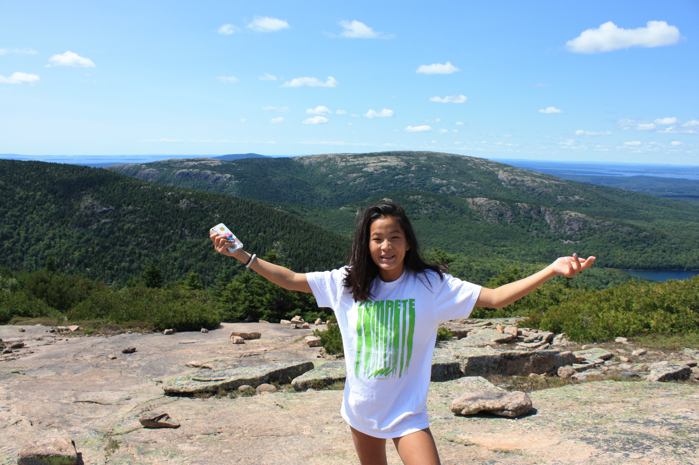

About Me
My name is Ellen Hart and I attend University of Richmond, pursuing a Bachelor of Science in Computer Science with a minor in Mathematics.

At the University of Richmond, I am actively involved in various organizations, including Alpha Phi Omega, Tri Delta, and the Asian American Student Union. Additionally, I work in the Athletics department, where I film live games for ESPN. Amidst my club obligations, classes, and homework, I also make time to explore the food options in Richmond and hit the gym regularly.
This summer, I had the fantastic opportunity to work as a Junior Frontend Developer at Relai. Collaborating with the marketing team, I played a key role in selecting an app idea for Relai 3. Assessing potential use cases for the exchange zone concept, I chose one of the most profitable options. Working closely with both marketing and backend development teams, I transformed this idea into a high-fidelity wireframe using Figma software, prioritizing user experience and considering the merchant's perspective. I was able to prioritize these two personas from the 600 businesses and 50 individuals we contacted to gain a better understanding of what they were looking for in an application. Actively participating in full-stack development alongside the backend interns, I contributed to the creation of their new application. Witnessing the project come to life and being part of bringing this innovative idea to reality was truly rewarding.
During my downtime this summer, I also worked at Key Bridge Boathouse, an outdoor kayak, paddle boarding, and canoe rental business, where I have returned for the past four summers. I enjoy taking my friends out paddleboarding to savor the beauty of nature in the city. Alongside my love for nature, I also relish indulging in fun activities like attending the Smithsonian's Solstice Saturday or going to various concerts in the city. Closer to home I continue to volunteer at my local retirement home and deliver food donations to the retirees.
As you can tell, I lead a busy life, but I find immense motivation in pushing myself in the fields I am passionate about and gaining a deeper understanding of them.